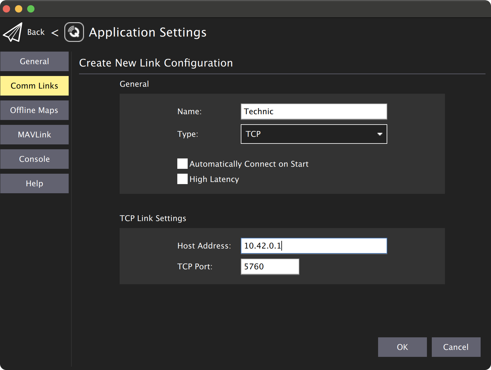

Возможны контроль, управление, калибровка и настройка полетного контроллера квадрокоптера с помощью программы QGroundControl по Wi-Fi. Для этого необходимо подключиться к Wi-Fi сети technic-xxxx.
По умолчанию на Technic настроена возможность подключения QGroundControl по протоколу TCP.

Также возможна настройка подключения по протоколу UDP. Для выбора различных вариантов подключения по UDP необходимо отредактировать параметр gcs_bridge в launch-файле /home/orangepi/technic_ws/src/technic/technic/launch/technic.launch.
После изменения launch-файла необходимо перезагрузить сервис technic:
sudo systemctl restart technic
gcs_bridge на udp-b.gcs_bridge на udp.Подсказка Особенностью UDP broadcast-бриджа является возможность просмотра телеметрии дрона одновременно с нескольких устройств (например с телефона и компьютера). Также он хорошо подходит для организации сети из устройств при помощи роутера.
gcs_bridge на udp-pb.